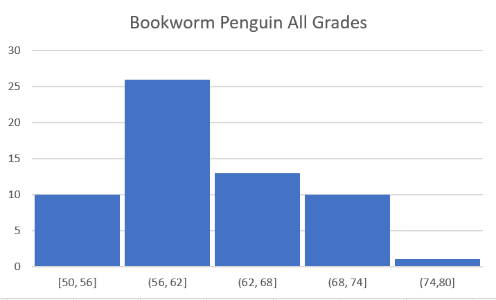
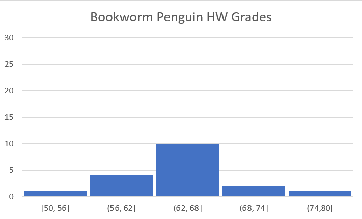
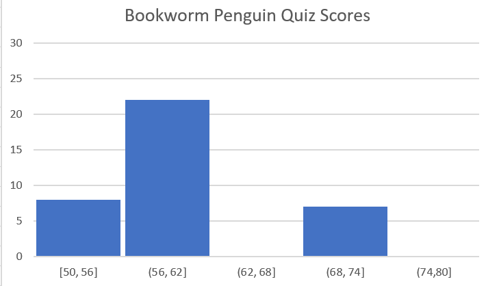

After briefly looking at the 3 graphs you can tell that the quiz grades had a bigger effect on the distrubution of overall scores, not only does the shape of the quiz grade histogram resemble that of the of the all grades histogram, but the frequencies in each bin appear simliar. While the HW histogram is more normally distrubuted its frequencies are not high enough to effect the the all grades histogram as drastically.
  